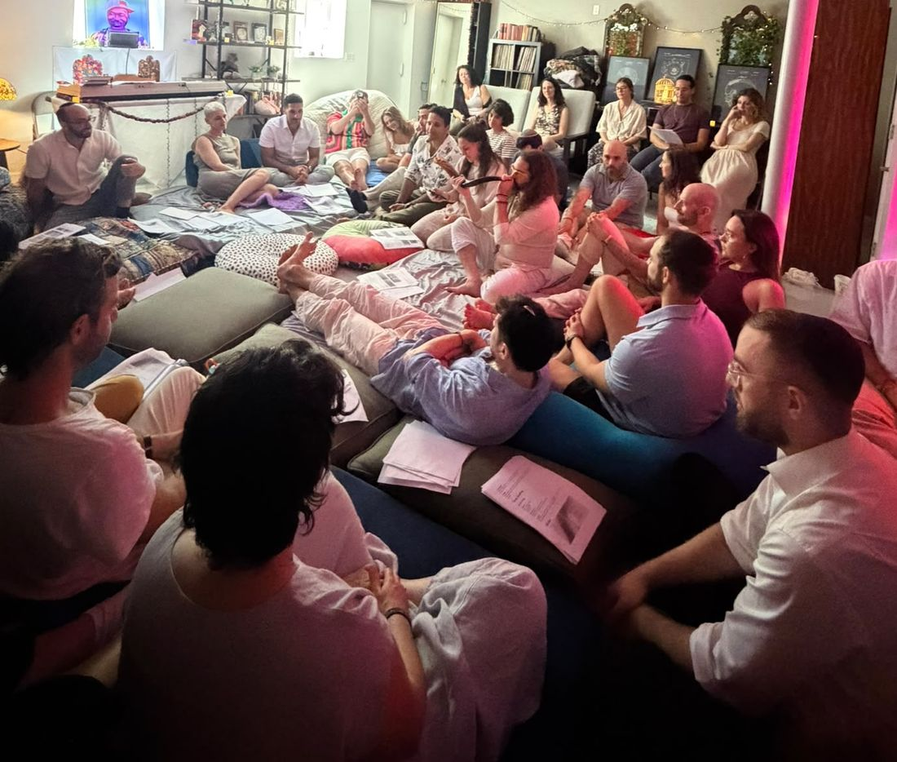

Music
Jams & Drum Circles
Bring an instrument, or borrow one of ours. We start with drums, drift into songs, and keep playing as long as the room wants to.
 Sanctuary
Sanctuary
Crown Heights, Brooklyn
A living room for the living world.
A spiritual home in Brooklyn. We gather through story, song, movement, and food to come back into relationship with ourselves, with each other, and with the world around us.

What is Sanctuary
Sanctuary is a house in Crown Heights with its door open to everyone. We host gatherings that are spiritual, embodied, and educational: meditations and music jams, Shabbat tables and holiday events, salons, prayer labs, Emerald Podcast listening parties, BBQs, cuddle puddles, and picnics with the trees.
Some nights are quiet and deep. Some go until the sun rises. Nearly all of them involve fruit and tea.
What ties them together is an intention: to help each other heal, learn, and remember how to belong in this world.
The world is alive
There's an old word for how we try to live: animism. It simply means treating the world as alive and worth being in relationship with. Not as a backdrop, not as a resource, but as kin.
You don't need to believe anything in particular to walk in. You just need a desire to connect to something deeper within or around yourself.
Our roots
The two friends who live here and host are Black and Jewish, and those lineages run deep in this house, alongside animist, contemplative, and other wisdom traditions we've learned from with gratitude.
They're where we come from, not a password at the door. Whoever you are and whatever you carry, there's a cushion for you.
How we gather
Shared meals, potlucks, and grills. Food finds its way into much of what we do.
Poems, jams, and drum circles, and the stories that remind us who we really are.
Meditation, prayer, and ritual: quieter ways of listening to ourselves and to the world.
Showing up for each other and for our neighbors, the way our ancestors did.
Dance, breath, and embodiment practice: letting the body lead us back to ourselves.
Gatherings
A few of the rhythms we keep coming back to.
Music
Bring an instrument, or borrow one of ours. We start with drums, drift into songs, and keep playing as long as the room wants to.
Salon
An evening of songs and poems from friends, then an open mic and an open jam. Radical inclusion, mild transcendence.
Practice
Experiments in stillness and devotion, open to people of any belief or none. Come curious and leave with a practice to take home.
Table
Cozy, co-created celebrations with a little tradition, a lot of song, and a healthy dose of food and hanging out.
Outdoors
Tree blessings, barefoot walks, and potlucks in the park, then long evenings around the fire pit in the backyard.
Learning
Teachings, texts, and podcasts that crack us open, taken in together and talked over afterward with a pot of tea.
We post upcoming gatherings on Partiful. Want an invite? Ask to be added to the list.
Our story
Sanctuary began with two best friends who became roommates, and then kept inviting people over. One dinner became a Shabbat. A Shabbat became a jam. A jam became a drum circle in the backyard, and somewhere along the way the apartment stopped feeling like an apartment.
Over the years we've hosted well over a hundred gatherings. We learned what anyone who has thrown a good dinner party already knows: there is no replacement for the connections that form in a home, around hosts who love you.
People here aren't consumers or participants. They're part of a community that takes care of each other.
We also weave with other community builders, healers, artists, and organizations across Brooklyn, and our door is open to more of them.
Your hosts
Co-founder & host
Chloé is the founder of Theory of Enchantment, a practice of chanting, breath, sound, and spiritual counseling that helps people find their voice and use it to build connection. Her work on belonging has reached audiences from TED to Harvard and has been covered by The New York Times, The Atlantic, and NPR.
At Sanctuary she's the one who will get the whole room singing.
Theory of Enchantment ↗Co-founder & host
Zach is a founder, facilitator, and educator who designs rituals and gatherings that help people find their way back to one another. He co-founded Project Shema, a leading antisemitism education organization rooted in curiosity and compassion, and has spent more than a decade bringing people together across differences.
At Sanctuary he's usually the one in the kitchen, making introductions and making sure you feel at home.
zachschaffer.com ↗Come by
Come to a gathering, bring a friend, a snack, or an offering. If you're a community weaver, artist, or organization dreaming up something together, we'd love to hear from you too.
sanctuarybklyn@gmail.com